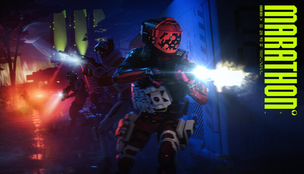
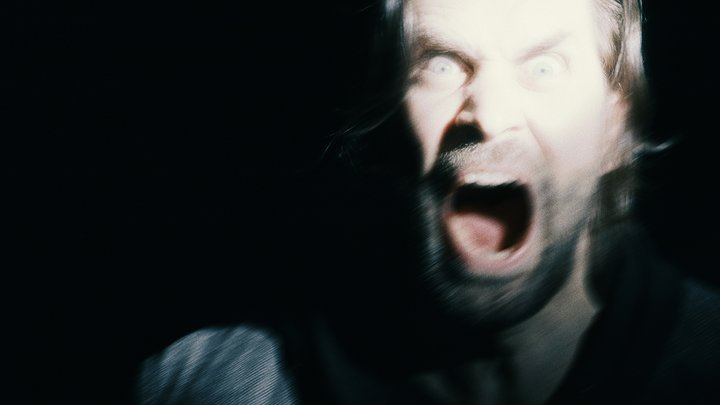
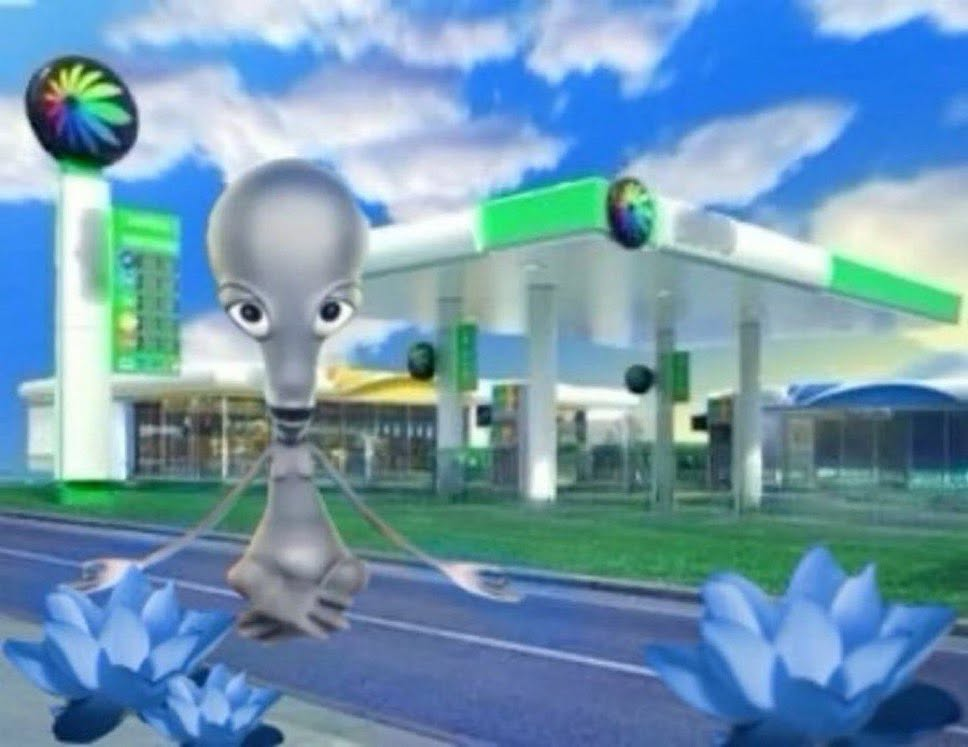

It's the middle of 2026! Woah!!!!!!! This blog post is a day later than the usual 30th because I was just really tired yesterday, apologies. But, uh, 2026 has been good. I've experienced a lot, spend lots of time with my friends, and met lots of new ones. The beginning was scary and rough due to Metro Surge and that's just continued throughout the year, but. Idk. I've struggled to really talk about that. I learn new depths of my hatred for America and the American empire with every passing day. So I stay brief on it when writing.
Art from the past few months I've liked:

Marathon (2026) — Holy shit! I've been planning to write a blog post about this game ever since I picked it up near the beginning of season 2, but oh my god, every time I do I just end up playing it some more. It's the most refreshing, beautiful, vibrant big-budget game I've played since Alan Wake 2. It's... phenomenal.

Alan Wake 2 — I've already talked about the Alan Wake series a lot on this blog (check out blog114, blog115, blog116, and blog119), but, wow! Truly transcendent video game experience.

American Dad — I ended up deciding to watch the whole show front-to-back, and am currently on season 15. Seasons 3 through 9 are some of the best television I've ever seen, and 10-onwards are still absolutely phenomenal.
Honourable Mentions:
• Death Stranding 2: On the Beach — Not revelatory like the first but really, really good!
• Persona 3/4/5 Dancing — 3 and 5 aren't great but they've all been huge inspirations.
• Side Story Podcast — Really wonderful people who loved Island Off Outer Darkness and approached talking about it with such care, I'll cherish it forever.
• Cyberpunk 2077 — It was alright with some high highs and low lows!
• My Oster Toaster — It toasts real good!
• My DualSense — My new favorite controller!
• Nirvanna the Band the Show the Movie — Saw it in theatres with my dad, is currently and will likely stay my favorite movie of the year.
• Being sick all the time — I was sick like all the time the first half of this year! Wtf is up with that ):
SGDQ 2026 is next week, which I've been looking forward to since SGDQ 2025 ended. I'm finishing up Island Off Outer Dancing right now, hoping for a late August release. And then I start up the Fall semester at the University of Minnesota, where I'm transferring from Minneapolis College. So that's exciting. And I'm moving, which is daunting. Lots in store.